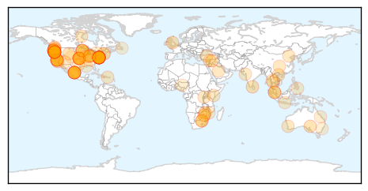
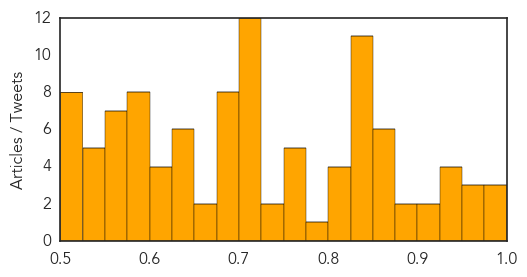

Unknown
30-Day Web Trend
30-Day Twitter Trend
Article Locations

Article Confidences
Top Articles:
- 0.988
- Making a point of getting the flu jab
- 0.984
- Chipotle closes 43 stores in Oregon, Washington, as health officials investigate E. coli outbreak
- 0.976
- Chipotle closes restaurants after E. coli scare
- 0.975
- You May Be One of the 3.7 Billion People Contaminated with Herpes, WHO Report
- 0.972
- What You Should Know About the Outbreak
- 0.966
- State, Local Health Officials On Alert With 'Alarming Increase' Of Syphilis Cases
- 0.945
- Syphilis cases on the rise across the state - TheStatehouseFile.com
- 0.939
- Chipotle temporarily closes 43 locations after E. coli scare
- 0.937
- Chipotle shuts 43 restaurants after eight diners hospitalised with deadly food bug
- 0.930
- Two-third of World’s Population suffers from Herpes: WHO Data
- 0.919
- WHO approximates 320 million people across the World have herpes
- 0.907
- Oregon agency probes E. coli cases linked to Chipotle - Fox 5 NY
- 0.890
- Health Officials Investigate E. Coli Outbreak Linked to Chipotle Restaurants
- 0.883
- 02.11.06 Health emergency in Mannar as virus fever spreads
- 0.874
- Chipotle shuts Seattle, Portland stores after E. coli outbreak
- 0.873
- Hospitals step up measures to curb ‘superbug’ that spreads via touch
- 0.872
- Chipotle E. Coli Outbreak Closes Stores
- 0.870
- Chipotle E. coli outbreak closes dozens of stores and it’s only getting worse
- 0.863
- Chipotle's E. Coli Outbreak
- 0.859
- E coli outbreak forces Chipotle to temporary close 43 stores
- 0.844
- Parts of southern Africa are within tantalising reach of eliminating malaria
- 0.844
- Chipotle shuts Seattle, Portland stores after E. coli outbreak
- 0.842
- Rise in seasonal diseases, MGM, TMH overcrowded
- 0.841
- Chipotle closes Seattle, Portland restaurants due to E. coli cases
- 0.840
- Chipotle Closes 43 Stores Due to E. Coli Outbreak
- 0.837
- Chipotle shuts Seattle, Portland stores after E. coli outbreak
- 0.836
- Chipotle closes restaurants 'in two US markets' following 20 cases of E coli virus
- 0.836
- Chipotle shuts Seattle, Portland stores after E. coli outbreak
- 0.835
- Public Toilets Must Be Kept Clean To Prevent Spread Of Typhoid Fever
- 0.833
- New Study: You Probably Have Herpes
- 0.829
- UPDATE 4-Chipotle shuts Seattle, Portland stores after E. coli outbreak
- 0.814
- Parts of southern Africa are within tantalising reach of eliminating malaria
- 0.814
- E. coli outbreak shuts down dozens of Chipotle locations in Pacific Northwest
- 0.813
- Chipotle Closes Restaurants Due to Possible E.Coli Contamination
- 0.812
- Flu clinics open in Lambton County
- 0.793
- Chipotle closes dozens of locations
- 0.758
- Around 3.7 Billion Worldwide People Have Herpes
- 0.758
- More cases of E. coli linked to Chipotle in Washington, Oregon expected
- 0.755
- Chipotle in Kent connected with E. coli outbreak
- 0.754
- DBKL demands cleaner restrooms - Nation
- 0.753
- Chipotle braces for more sick people from its E. coli outbreak
- 0.732
- Chipotle E. Coli Outbreak Causes Closure Of 43 Restaurants
- 0.728
- SGGP English Edition- Post- vaccination cases in Vietnam fewer than WHO’s warning
- 0.719
- Chipotle Closes Oregon, Wash. Stores Due to E. Coli
- 0.711
- Chipotle Closes Washington, Oregon Stores Due To Reported E. Coli Outbreak
- 0.707
- Rwanda accused of manipulating poverty statistics
- 0.707
- Lebanon charges Saudi prince over two tonne drug haul
- 0.707
- France's Hollande says Chinese support ‘essential’ at climate talks
- 0.707
- ‘Air Cocaine’ pilots who fled Dominican Republic arrested in France
- 0.707
- Erdogan calls for world to respect ‘Turkish vote for stability’
Showing top 50 articles...
Top Tweets:
-
No tweets found for Nov 02, 2015